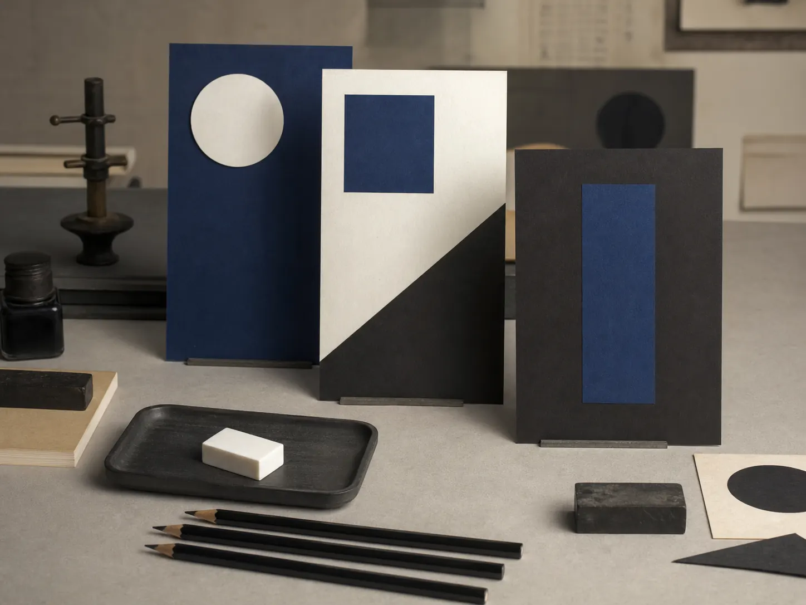
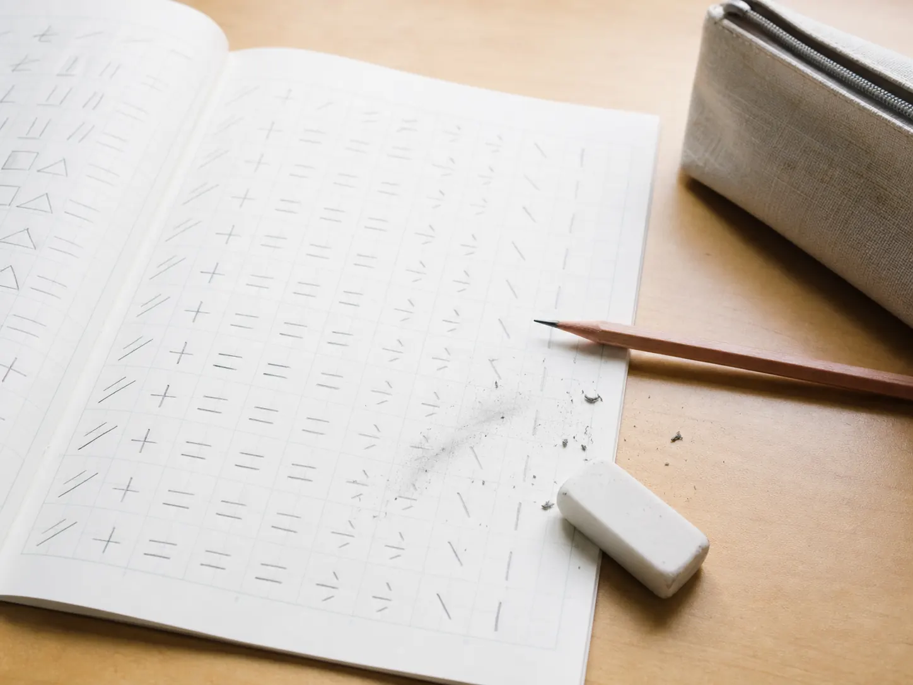
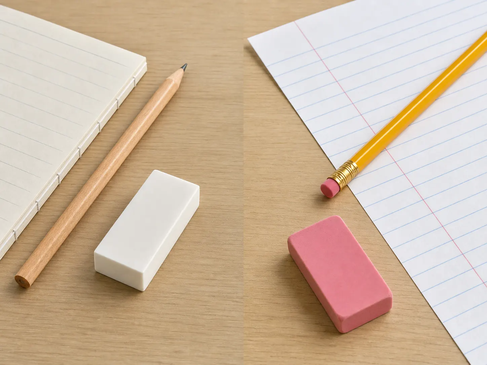

Learn the reason first. Discover the product second.
Why Is the MONO Eraser So Popular in Japan?
Look inside Japanese stationery stores, school pencil cases, and study-desk photographs, and one small object appears again and again: a white block eraser in a blue, white, and black sleeve.
The Tombow MONO eraser did not become familiar through erasing performance alone. Its history, the daily importance of correction in pencil-based study, an unusually consistent design, and trust built across generations all help explain its place in Japanese stationery culture.
See the Tombow MONO Eraser on Amazon
A small standard
What Is the Tombow MONO Eraser?
MONO is a Tombow Pencil brand that includes pencils, erasers, and correction tools. Today, MONO erasers come in several shapes and specialized versions. The cultural icon at the center of this guide is the simple white plastic block eraser protected by a blue, white, and black paper sleeve.
The linked Amazon listing identifies the product as the Tombow MONO PE-01 Plastic Eraser, 10-Pack. It shows a white block form, the familiar paper sleeve, and use with pencil and mechanical-pencil lines. The listing currently describes ten erasers measuring 17 × 11 × 43 mm each. Package information can change, so confirm it on Amazon before ordering.
An accidental beginning
It Started as a Bonus for a Pencil
Tombow’s official MONO story begins in 1967, when a small plastic eraser was included with a dozen-box of the premium MONO 100 pencil. It was not initially introduced as a standalone eraser empire. According to Tombow, users praised its erasing ability and asked to buy the eraser separately.
That response led to the independent MONO eraser in 1969. The story matters because it reverses the usual product-development narrative: a useful accessory earned its own identity through everyday experience.
Try a Classic Japanese MONO Eraser
The practical experience
Why Does It Erase So Cleanly?
MONO is a plastic eraser designed to remove graphite from pencils and mechanical pencils. Tombow emphasizes high erasability, while the Amazon listing describes clean removal of both kinds of writing. In practice, a good plastic block eraser can lift graphite with controlled pressure and help leave a page ready for rewriting.
Performance still depends on the paper, graphite, pressure, and condition of the eraser. MONO should not be presented as universally superior to every eraser made elsewhere. Its appeal is the dependable combination of a grippable block, a protected surface, and performance suited to ordinary notes, calculations, drafts, and study.

Writing, correcting, continuing
Why Erasers Matter in Japanese School Culture
As our guide to wooden pencils in Japanese elementary schools explains, many schools begin with pencils, although rules differ by school and grade. Where children write in graphite every day, the eraser becomes part of the same learning system as the pencil and notebook.
Students rewrite character forms, correct arithmetic steps, and keep notes readable enough to review later. Erasing is not the opposite of learning; it is one way the page records revision. A pencil, eraser, and A4 or B5 notebook work together as a modest study toolkit.
This does not mean every Japanese child uses MONO or that schools officially require it. MONO is more accurately described as one of the best-known standard erasers in Japanese stationery culture.
A color identity since 1969
The Meaning of the Blue, White, and Black Design
Tombow says the three-color sleeve has accompanied the standalone eraser since its 1969 launch. The contrasting palette was created to help a small object stand out. More than fifty years of continuity later, the colors have become a visual shorthand for the MONO brand.
In 2017, Japan’s Patent Office approved the pattern as a trademark consisting only of colors. Tombow describes it as Japan’s first registration in that category. The distinction belongs to the specific registered arrangement—not to every use of blue, white, and black.
Why Has the Design Barely Changed?
A stable design makes the eraser easy to identify in a stationery shop or pencil case. It may also help different generations connect the same appearance with a familiar working tool. The restraint feels practical rather than decorative, allowing accumulated experience to carry more meaning than novelty.

Different school-desk traditions
MONO Eraser vs. Typical Pink Erasers in the United States
Standalone white block erasers are a familiar part of Japanese stationery aisles. In the United States, pink block erasers and erasers attached to No. 2 pencils are also widely familiar; official elementary supply lists often request both pencils and separate erasers.
A block gives the hand a broad surface to hold and can cover a larger area than a pencil-end eraser. A pencil-end eraser keeps correction attached to the writing tool. Materials and quality vary widely, so neither format is automatically better.
Japanese stationery culture is notable for treating the standalone eraser as its own category, with choices in size, shape, and purpose. American classrooms vary by school and teacher too, as official supply lists from different districts make clear.
Why it endures
Why Japanese Stationery Fans Still Choose It
No single reason explains a standard that lasts for decades.
A story people can retell
The journey from a 1967 pencil-box bonus to a standalone 1969 product gives an ordinary tool a memorable origin.
A simple working shape
The compact block is easy to understand, hold, store, and use across school, office, drafting, and sketching.
Familiar performance
Repeated experience with clean graphite correction may help explain why users return to the same name and form.
Recognition across generations
A long-lived visual identity makes the eraser recognizable without needing to follow every stationery trend.
Who is it for?
A practical introduction to Japanese stationery
Students and note-takers
For people who regularly correct pencil or mechanical-pencil notes, calculations, and study pages.
Sketchers and drafters
For light construction lines, rough ideas, and analog work that changes before it becomes final.
Simple-tool enthusiasts
For anyone who prefers understated school supplies with a clear purpose and little visual noise.
Japanese culture readers
For readers who want to experience stationery history through a small object used in everyday life.
Try the culture through the tool
Try a Classic Japanese Eraser
The linked listing is a Tombow MONO PE-01 Plastic Eraser 10-Pack. A multipack may suit someone who wants spares for several desks, a family supply area, a classroom resource box, or a longer introduction to a Japanese stationery standard. It is not presented as an official school set, and individual wrapping is not assumed.
Check the current price, seller, availability, and package details on Amazon before purchasing. Amazon listings can change.
Try a Classic Japanese MONO EraserPrimary Sources
- Tombow’s official MONO product page — product category and erasing-performance description.
- Tombow’s official MONO brand story — the 1967 pencil-box origin and 1969 standalone launch.
- Tombow’s official company history — MONO milestones in the company timeline.
- Tombow’s color-trademark announcement — the 2017 registration and history of the three-color pattern.
- Tombow’s MONO color 50th-anniversary history — design continuity since 1969.
- Pinellas County Schools supply list and Elkhorn Public Schools supply list — examples of No. 2 pencils and separate erasers in U.S. elementary supplies.